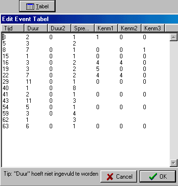
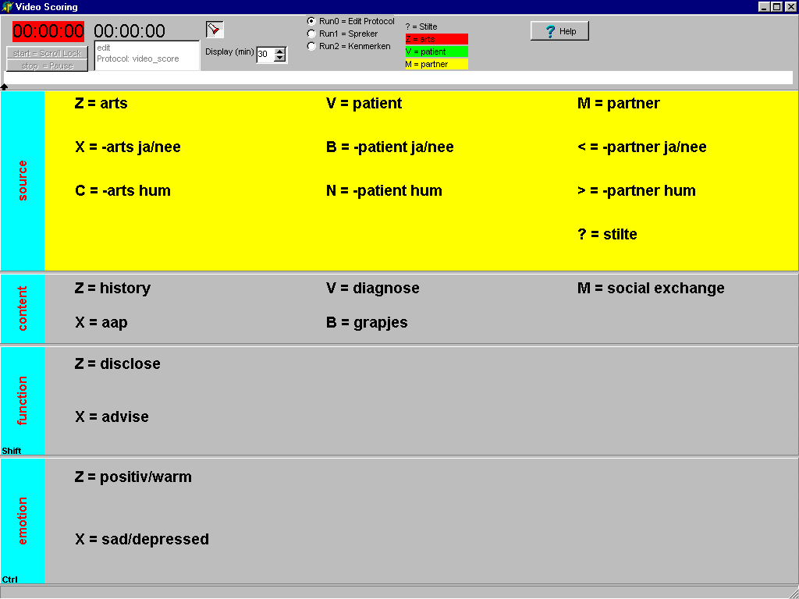

Inleiding 
Deze module is bedoeld voor het scoren
van tijd events, b.v. het scoren van een video opname.
De video-scorings-module is geheel geïntergreerd
in de TestOrganizer.
Ieder event wordt aangegeven door een
tijdstip, een spreker en een aantal kenmerken (maximaal 3).
Een scoring wordt in minimaal 2 runs voltooid.
In de eerste run worden de sprekers en
de bijbehorende tijdstippen gescored.
Nadat een eerste run is afgenomen en er
events zijn ingevoerd, wordt de test in de TestOrganizer afgevinkt.
In de tweede run worden de kenmerken toegevoegd.
In de tweede run kunnen ook sprekers en tijdstippen worden gewijzigd.
Protocollen kunnen eenvoudig worden aangemaakt
en gewijzigd in de edit-mode (run0).
Het databestand is een zogenaamd tab-delimited
bestand, dat door alle moderne programma's zondermeer kan worden gelezen
en verder verwerkt.
Run
1, sprekers en tijdstippen invoeren
De eerste run wordt gestart, door een
protocol naar een patient over te hevelen, waarna deze "geplande" test
kan worden gestart.
De eerste run is bedoeld om "in één
adem" de sprekers en tijdstippen te scoren. Sprekers, waarbij het eerste
teken van de omschrijving een minteken "-" is, zijn zogenaamde non-sticky
toetsen, d.w.z. ze zijn aktief zolang de betreffende toets is ingedrukt,
na het loslaten wordt naar de vorige spreker terug gesprongen.
In de eerste run kan weliswaar gepauzeerd
worden, maar wijzigen van reeds ingevoerde sprekers en tijdstippen is hier
niet mogelijk Het wijzigen kan wel in run2, er wordt dan altijd in de overschrijf
modus gewerkt. Dus als er iets fout wordt ingevoerd, pauzeer even, maak
een aantekening, maar zorg dat de rest synchroon (dus absoluut in de tijd)
wordt opgenomen. Een andere mogelijkheid is om de opname te stoppen en
in run 2 eerst de correcties aan te brengen en vervolgens in run2 de rest
er achter aan te hangen. Het uitbreiden van een bestand in run=2 gaat op
precies dezelfde wijze als in run1 (het invoegen van events gaat echter
minder gemakkelijk).
Run
2, kenmerken toevoegen
Met onderstaande toetsen kan door een
opname worden genavigeerd.
| Toets |
Aktie |
Pijl Naar Beneden
Pijl Omhoog
Page Down
Page Up
Pijl Rechts
Pijl Links
Klik op grafische tijdbalk
Del
Ins
Run1, start |
Naar volgend Event
Naar vorig Event
Naar volgend Event van dezelfde spreker
Naar vorig Event van dezelfde spreker
1 seconde verder (dit is een repeterende
toets)
1 seconde terug (repeterend)
ga naar aangeklikte positie
Verwijder geselecteerd event
Voeg om de huidige positie één
nieuw event in
Append, voeg aan het einde (meerdere) events
toe |
De lengte van de tijdbalk kan in stappen
van 10 minuten worden ingesteld, zodat deze kan worden aangepast aan de
lengte van de opname.
Run
2, Invoeren van de kenmerken
Kenmerken zijn altijd sticky. Bij ieder
spreker event kan slechts per paneel 1 kenmerk worden ingevoerd. Wil men
bij dezelfde spreker verschillende kenmerken (uit 1 paneel) achtereen invoeren,
dan moeten extra spreker events worden ingevoerd.
De kenmerken hebben een zogenaamde toggle
functie d.w.z. als een toets wordt ingedrukt, terwijl het bijbehorende
label niet actief is, wordt het betreffende label actief gemaakt. Is het
label actief, dan heeft indrukken van de bijbehorende toets tot gevolg
dat het label inactief wordt gemaakt.
Het activeren van niet-zichtbare kenmerken
heeft geen invloed, ook niet op het uitvoer bestand.
Run 2, Verwijderen
van een Event
Ga met de navigatie toetsen of een muisklik
op de tijdbalk naar de gewenste lokatie, druk op DEL, geef een expliciete
bevestiging en het bewuste spreker-event wordt gewist. LET OP: er wordt
geen tijdsegment tussen uit gepoetst, maar het vorige event wordt gewoon
verlengd.
Run 2, Invoeren
van één extra spreker-Event
Ga met de navigatie toetsen of een muisklik
op de tijdbalk naar de gewenste lokatie, waarbij de fijn-instelling het
best kan gebeuren met de seconde toetsen (pijl links en rechts), druk op
INS, er wordt nu om een expliciete bevestiging gevraagd, nu wordt de opname
teller gestart en kan men 1 spreker event invoeren. LET OP, alle spreker
toetsen zijn nu non-sticky geworden, en dus moet de betreffende spreker-toets
net zo lang ingedrukt worden gehouden als in werkelijkheid. Zodra de spreker
toets wordt losgelaten, stopt de opname teller, en wordt weer naar de normale
kenmerk mode (run=2) gesprongen.
Run 2, Toevoegen
events aan het einde
Druk op RUN1, eerst wordt om een expliciete
bevestiging gevraagd, vervolgens wordt de timer direct gestart en wordt
de scoring voortgezet volgens de laatste kenmerken.
Het is net of er gewoon een run 1 scoring
wordt uitgevoerd, de start en stopknop zijn nu weer gewoon beschikbaar
en de opname blijft doorlopen totdat deze expliciet wordt gestopt.
Terug gaan naar de editmode voor kenmerken
(run2) geschiedt door de timer te stoppen en run2 in te drukken. Het is
overigens verstandig om na het uitbreiden van een scoring, de module video-scoring
(niet de TestOrganizer) af te sluiten (zodat zeker is dat de gewijzigde
data is opgeslagen en vervolgens opnieuw te openen om de kenmerken toe
te voegen.
Run
2, Events wijzigen via een tabel
| Via de knop "Tabel" kunnen de events ook wordern
gewijzigd in een tabel.
Het belangrijkste is dat de tijd (in seconden) en de spreker worden
ingevuld.
Alleen bij de laaste regel is het natuurlijk van belang de "Duur" in
te vullen. |
 |
Run
0, Edit protocol
Onderstaande instellingen zijn alleen toegankelijk in run0 (edit protocol).
|
Gewenste Instelling
|
Hoe te realiseren
|
Spreker-tekst wijzigen
Kenmerk-tekst Wijzigen |
Zorg dat "alles zichtbaar" is ingesteld
(de zaklamp brandt),
klik op het gewenste label
en wijzig de tekst |
| Paneel Titel wijzigen |
Klik op de titel
en wijzig de tekst |
| namen van de sprekers wijzigen |
Deze namen worden automatisch afgeleid
uit de bovenste rij van het bovenste paneel van iedere kolom.
Stilte is altijd ?/ |
| Default kenmerk paneel instellen |
Klik met de rechtermuis op het betreffende
paneel,
er verschijnt een afrol menu,
klik hier op default |
| Kleur van het actieve paneel instellen |
Klik met de rechtermuis op het actieve
paneel,
er verschijnt een afrol menu,
klik hier op kleur |
| Kleur van de in-actieve panelen instellen |
Klik met de rechtermuis op een in-actieve
paneel,
er verschijnt een afrol menu,
klik hier op kleur |
| Kleur van het actieve kenmerk instellen |
Klik met de rechtermuis op het actieve
kenmerk,
er verschijnt een afrol menu,
klik hier op kleur |
| Kleur van de in-actieve kenmerken instellen |
Dit kan niet worden ingesteld,
inactieve kenmerken hebben de kleur van
het paneel |
| Kleur van de titels instellen |
Klik met de rechtermuis op een titelbalk,
er verschijnt een afrol menu,
klik hier op kleur |
| Kleur van de sprekers instellen |
Klik met de rechter of linker muis op
een spreker labels (bovenaan),
en de kleur kan worden ingesteld |
| Font van de kenmerken instellen |
Klik met de rechtermuis op een kenmerk,
er verschijnt een afrol menu,
klik hier op font |
| Font van de titels instellen |
Klik met de rechtermuis op een titel,
er verschijnt een afrol menu,
klik hier op font |
|
|
| Tijdas instellen |
Druk op de op/neer knopjes, totdat de
gewenste waarde verschijnt. |
|
|
|
|
| Bestandsnaam van het protocol wijzigen |
Bij het afsluiten van de edit-mode wordt
altijd om een bestandsnaam gevraagd |
|
|
|
|
|
|

Display Opbouw
Het belangrijkste in het display zijn
de 4 boven elkaar geplaatste panelen met items.
Het bovenste paneel representeert de spreker
en is in principe alleen de eerste run aktief.
De volgende 3 panelen stellen ieder een
groep kenmerken voor. Aan ieder event kan 1 kenmerk uit iedere groep worden
toegekend.
Eén van de 3 kenmerk panelen kan
als default kenmerk worden aangemerkt, hetgeen betekent dat deze rechtstreeks
door de toetsen wordt bediend. De overige twee kenmerk panelen worden vervolgens
bediend door respectievelijk de "Ctrl"-toets voor de onderste en "Shift"-toets
voor de bovenste niet-default paneel.
Panelen
In de protocol edit-mode, zijn er tussen
de panelen splitters actief, waarmee de gewenste paneel grootte kan worden
ingesteld (slepen met muis om de paneel grootte in te stellen).
Grafische Tijdbalk
In de tijdbalk is met een kleur aangegeven
wie de huidige spreker is.
De kleuren zijn te definieren door met
linker of rechter muistoets op de spreker-labels te klikken.
De namen uit deze labels zijn rechtstreeks
afgeleid uit de bovenste rij van iedere kolom uit het eerste paneel. Het
label stilte is een biezondere, want deze is gekoppeld aan "?" toets en
betekent ten alle tijden "Stilte".
Run 0, Edit /
New Protocol
In de new mode, wordt een compleet leeg
en door het programma gedirigeerd default protocol aangemaakt.
In de edit mode kan een bestaand protocol
worden gewijzigd en eventueel onder een andere naam worden opgeborgen.
Derhalve biedt de edit mode uitstekende mogelijkheden om nieuwe protocollen
aan te maken op basis van oude protocollen, hetgeen in het algemeen de
voorkeur verdient boven de mode new, want dan krijgt men zijn eigen defaults.
Run 0, Edit ,
algemeen
Met de rechternuistoets kunnen de kenmerken
(kleur, font, e.d.) worden ingesteld.
Met de linker-muistoets kunnen de teksten
worden gewijzigd.
Run 0, Edit, exacte
weergave
In de exacte weergave mode wordt het scherm
precies zo weergegeven als tijdens de opname en bekijken.
In de edit mode is er echter behoefte
om bepaalde extra instellingen te kunnen doen. Door de exacte weergave
uit te schakelen (standaard opstart waarde in de edit-mode), komen alle
mogelijke tekstlabels in beeld, ook de lege.
Met behulp van het knopje met de zaklamp, kan worden omgeschakeld tussen
excate weergave en alles zichtbaar.
Data Bestand
Het data bestand is een tab-delimited bestand met kolom headers.
| Tijd |
Duur |
Duur2 |
Spreker |
Kenmerk1 |
Kenmerk2 |
Kenmerk3 |
| 2 |
10 |
0 |
1 |
2 |
4 |
|
| 12 |
6 |
0 |
3 |
|
11 |
22 |
| 18 |
20 |
0 |
1 |
2 |
13 |
|
| 38 |
11 |
0 |
2 |
|
16 |
|
|
|
| Tijd |
Het startpunt van het event in seconden, na het begin van de opname |
| Duur |
De duur in seconden |
| Duur2 |
momenteel altijd 0, gepland voor toekomstig gebruik, i.v.m. non-sticky
toetsen |
| Spreker |
De spreker, 1=eerste rij van de eerste kolom, 2=eerste rij van de tweede
kolom, etc
Biezonder is 12, dit betekent ten allle tijden "Stilte" |
| Kenmerk1 |
Kenmerk uit het eerste paneel,
mag ontbreken of 0 zijn. |
| Kenmerk2 |
idem tweede paneel |
| Kenmerk3 |
idem derde paneel |
Toetscodes
Onderstaand de toetscode, let op de afwijkende
codering voor het ?-teken.
Z X C V B
N M < > ?
1 2 3 4 5
6 7 8 9 12
A S D F G
H J K L : "
10 11 13 14 15 16 17 18 19 20 21
© Copyright Instrumentele Dienst, 2000
 SM, last updated 16-06-2000
SM, last updated 16-06-2000